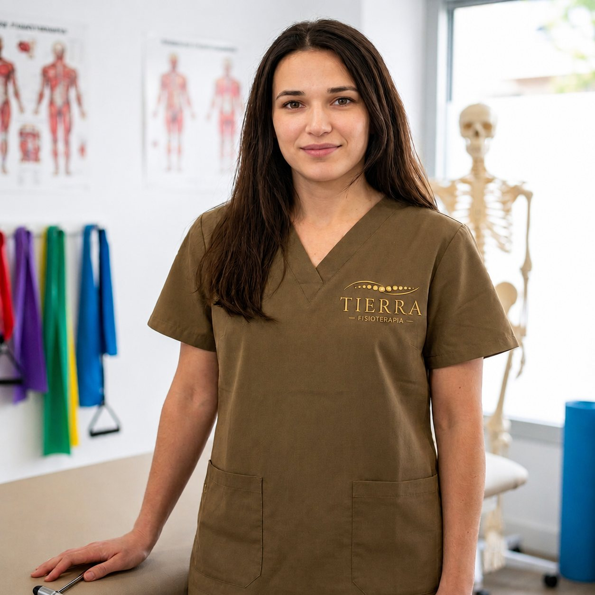

La persona detrás de Tierra
Andrea Legido Andrés
Fisioterapeuta en Zamora. Siete años de camino, muy ligado al deporte, hasta abrir mi propia consulta.

Una consulta pensada para escuchar antes de tratar.
Llevo 7 años tratando pacientes en varios centros y por cuenta propia, y soy la fisioterapeuta del equipo de fútbol de Villaralbo. Ese camino, muy ligado al deporte, es el que ha dado forma a Tierra.
Creo en el trabajo con las manos, en entender de dónde viene el dolor y en acompañar cada recuperación —también la vuelta al deporte— con calma, no con prisa.
El camino
De los primeros pasos a Tierra
Primeros pasos
Graduada en Fisioterapia. Empiezo a tratar pacientes en distintos centros, con especial atención al mundo deportivo.
Por cuenta propia
Compagino el trabajo en varios centros con mis propios pacientes, con un enfoque cada vez más personalizado.
Fisio a pie de campo
Me incorporo como fisioterapeuta del equipo de fútbol de Villaralbo: lesiones deportivas, recuperación y vuelta al juego.
Nace Tierra
Abro mi propia consulta en Zamora, con sesiones individuales y un enfoque muy orientado al deporte.
Cómo trabajo
Tres ideas que guían cada sesión
Escucha real
Antes de tratar, escucho. Cada cuerpo cuenta una historia distinta, y el tratamiento parte de ahí.
Manos, no máquinas
Trabajo con terapia manual: mis manos son la herramienta principal, no un aparato entre nosotros.
Raíz, no síntoma
Busco el origen del dolor, no solo calmarlo un rato. Por eso los planes de tratamiento son a medida.
Primera visita
¿Hablamos?
Cuéntame qué te ocurre y buscamos juntos el mejor camino.
Respuesta en el mismo día, de lunes a viernes.